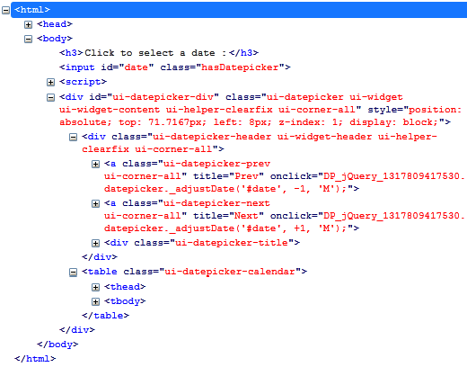
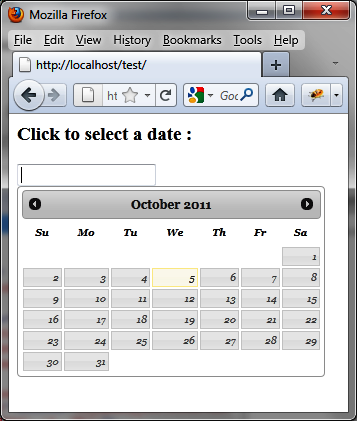

{% include JB/setup %}
{% raw %}
<div>
<div class="book" title="Formatting Content"><div class="book"><div class="book"><div class="book"><h1 class="title2"><a id="formatting_content-id6" class="calibre1"></a>Formatting Content</h1></div></div></div><p class="calibre7">The <code class="literal">datepicker ()</code> method changes
    the appearance of HTML elements on a page by adding new CSS
    classes.</p><p class="calibre7"><a class="ulink" href="ch08s02.html#html_code_generated_by_the_datepicker_op" title="Figure 8-2. HTML code generated by the datepicker () method">Figure 8-2</a> shows an
    example of HTML generated by jQuery UI once the <span class="firstname"><code class="literal">datepicker ()</code></span>
    instruction modifies the HTML (the code was recovered using the Firebug
    extension in Firefox).</p><div class="figure"><a id="html_code_generated_by_the_datepicker_op" class="firstname"></a><div class="book"><div class="book"><a id="I_mediaobject8_d1e5734" class="firstname"></a></div></div><p class="title4">Figure 8-2. HTML code generated by the datepicker () method</p></div><p class="calibre7">The input field is slightly modified by adding the <code class="literal">hasDatepicker</code> CSS class, but a <code class="literal">&lt;div&gt;</code> element (having the <code class="literal">ui-datepicker-div</code> CSS class) corresponding to
    the calendar is also inserted into the HTML. This <code class="literal">&lt;div&gt;</code> element will be displayed or hidden
    <span class="firstname">depending</span> on whether the user wants to
    see the calendar or not.</p><p class="calibre7">The structure of the HTML is simple: in addition to the
    corresponding global <code class="literal">&lt;div&gt;</code>
    calendar, it has a first <code class="literal">&lt;div&gt;</code>
    containing the first line of the calendar (the title for the month and
    year, with two buttons for arrows for the month), then a table with the
    names of the day (<code class="literal">&lt;thead&gt;</code> tag)
    and the corresponding days (<code class="literal">&lt;tbody&gt;</code> tag).</p><p class="calibre7">It is possible to use CSS classes for HTML elements to customize the
    display. For <span class="firstname">example,</span> if we change the
    <code class="literal">ui-datepicker-header</code> CSS class
    associated with <code class="literal">&lt;div&gt;</code> elements
    and the <code class="literal">ui-datepicker-calendar</code> class
    associated with <code class="literal">&lt;table&gt;</code> elements,
    we get a new appearance for the calendar (see <a class="ulink" href="ch08s02.html#customized_calendar" title="Figure 8-3. Customized calendar">Figure 8-3</a>). These classes are changed in the HTML
    by adding a <code class="literal">&lt;style&gt;</code> tag:</p><a id="I_programlisting8_d1e5793" class="firstname"></a><pre class="programlisting">&lt;script src = jquery.js&gt;&lt;/script&gt;
&lt;script src = jqueryui/js/jquery-ui-1.8.16.custom.min.js&gt;&lt;/script&gt;

&lt;link rel=stylesheet type=text/css
      href=jqueryui/css/smoothness/jquery-ui-1.8.16.custom.css /&gt;

<span class="firstname"><strong class="userinput">&lt;style type=text/css&gt;</strong></span>
  <span class="firstname"><strong class="userinput">div.ui-datepicker-header {</strong></span>
    <span class="firstname"><strong class="userinput">font-size : 12px;</strong></span>
    <span class="firstname"><strong class="userinput">font-family : georgia;</strong></span>
  <span class="firstname"><strong class="userinput">}</strong></span>

  <span class="firstname"><strong class="userinput">table.ui-datepicker-calendar {</strong></span>
    <span class="firstname"><strong class="userinput">font-size : 10px;</strong></span>
    <span class="firstname"><strong class="userinput">font-family : georgia;</strong></span>
    <span class="firstname"><strong class="userinput">font-style : italic;</strong></span>
  <span class="firstname"><strong class="userinput">}</strong></span>
<span class="firstname"><strong class="userinput">&lt;/style&gt;</strong></span>

&lt;h3&gt;Click to select a date :&lt;/h3&gt;
&lt;input id=date /&gt;

&lt;script&gt;

$("input#date").datepicker ();

&lt;/script&gt;</pre><div class="book"><div class="figure"><a id="customized_calendar" class="firstname"></a><div class="book"><div class="book"><a id="I_mediaobject8_d1e5832" class="firstname"></a></div></div><p class="title4">Figure 8-3. Customized calendar</p></div></div></div></div>

{% endraw %}

